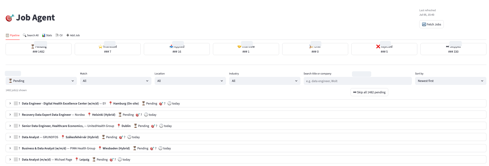
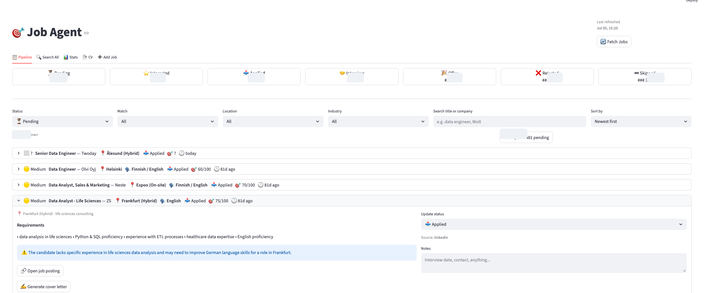
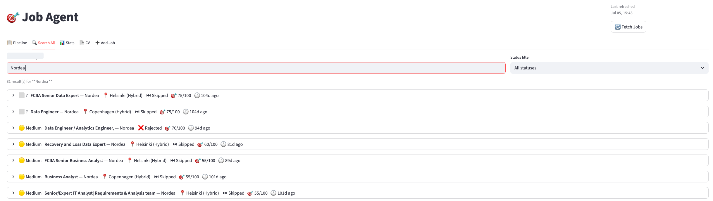
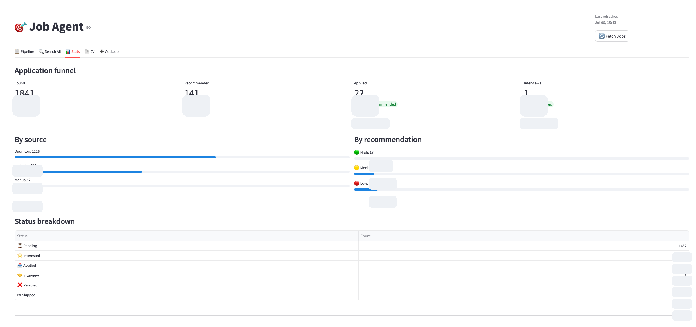
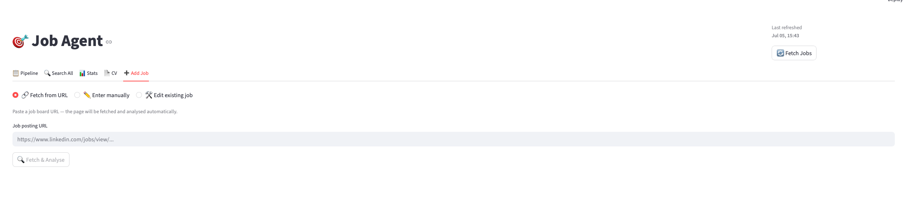

Business Problem
Job hunting produces a high-volume stream of postings, saved links, alerts, and duplicate roles across multiple sources. The hard part is not only finding opportunities; it is deciding which roles deserve attention, tracking status consistently, and remembering why a role was accepted, skipped, or deprioritized.
I wanted a single decision-support workspace that could combine application tracking with analytics: a pipeline view for day-to-day triage, search for historical context, and a stats view for understanding where the process was working.
Solution Overview
Job Agent collects job opportunities into a structured database and exposes them through a lightweight dashboard. Each job can be searched, filtered, categorized by status, and reviewed with supporting metadata such as source, location, language requirements, recommendation level, and match score.
The highlight was an earlier AI-assisted evaluation workflow: the system extracted key requirements from job ads, compared them against my CV, assigned a fit score, summarized strengths, and surfaced potential gaps. I later limited automated scoring to manage inference cost, while keeping the public case study focused on the dashboard, analytics, and product thinking behind the workflow.
High-Level Architecture
The public case study keeps implementation details high level: inputs are normalized into a structured store, enriched with AI-assisted metadata, and served through a dashboard for tracking and analysis.
Feature Walkthrough
The dashboard is organized around the actual workflow: triage new roles, inspect AI-generated match context, search historical applications, and review aggregate funnel performance. Exact counts have been redacted in the screenshots for privacy.





Key Features
- Centralized application pipeline with statuses for pending, interested, applied, interview, offer, rejected, and skipped roles.
- Fit scoring and recommendation tiers designed to prioritize higher-signal opportunities.
- Requirement extraction that turns long job ads into concise decision criteria.
- Candidate gap notes that highlight missing skills, domain context, or language/location constraints.
- Global search for auditing previous applications by company, title, status, or match context.
- Funnel analytics for understanding source quality and application progress over time.
Technologies Used
Language & Runtime
- Python
AI
- LLM-assisted analysis
- prompted extraction
Scheduling
- automated refresh jobs
Data
- SQLite
- structured metadata
Parsing
- HTML parsing
- job-post normalization
Dashboard
- Streamlit
Documents
- CV text workspace
- document export
What I Learned
- AI value depends on timing. Scoring every posting is useful, but not always cost-effective. The better product pattern is to reserve deeper analysis for roles that pass an initial relevance threshold.
- Recruiting data needs structure before intelligence. Status, source, location, language, and company metadata made the AI analysis more actionable because it landed inside an organized workflow.
- Decision support is more valuable than automation alone. The strongest feature was not simply collecting jobs; it was explaining why a role looked promising or weak against a concrete CV.
- Dashboards should support repeated daily use. Filters, search, and status changes mattered more than decorative charts because the tool had to reduce friction every time I reviewed jobs.
Future Improvements
- Introduce a cost-aware scoring queue that only runs deeper AI analysis for roles passing simple rule-based filters first.
- Add model evaluation checks so extracted requirements and gap notes can be reviewed for consistency over time.
- Improve privacy controls with one-click redaction for screenshots and public demo data.
- Add trend views for source quality, application conversion, and response rates over time.
- Create a lightweight demo mode with synthetic job data so the project can be shown publicly without exposing private application history.